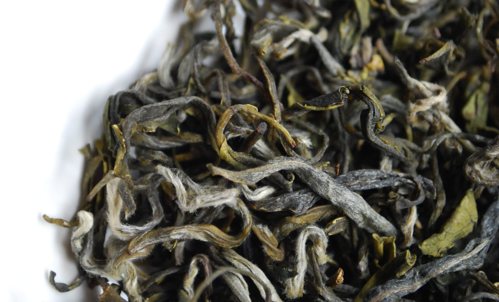
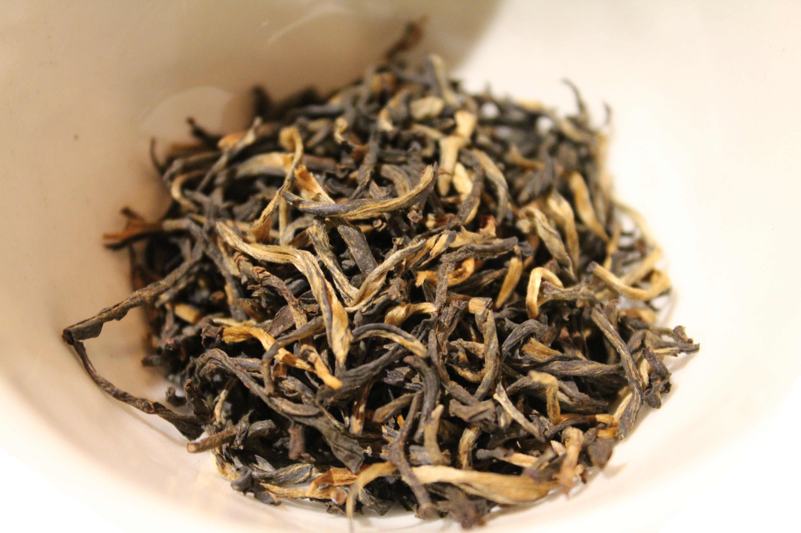
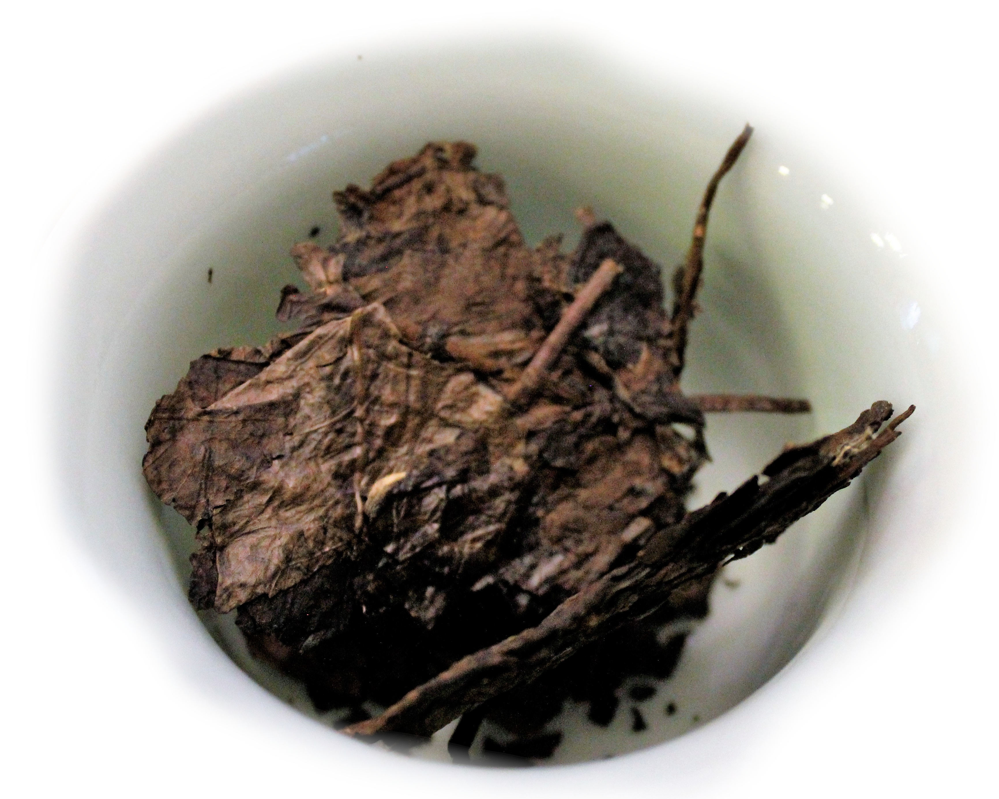

Die vier wichtigsten Teesorten
Die großen Teesorten der chinesischen Teekultur sind grüner Tee, schwarzer Tee, weißer Tee und Oolong. Sie bilden den Ursprung fast aller weltweit produzierten Tees.
Die Sorten unterscheiden sich hauptsächlich in ihrem Oxidationsgrad. Sofort nach dem Pflücken startet das Teeblatt eine Reaktion mit dem in der Luft enthaltenen Sauerstoff, wodurch die chemische Zusammensetzung der Inhaltsstoffe verändert wird. Das frische Teeblatt hat einen hohen Anteil an Bitterstoffen und üblicherweise viele blumige oder leicht fruchtige Aromastoffe. Durch die Oxidation wird die Bitterkeit abgebaut und aus den leichten Aromen entstehen dunklere Malznoten und eine tiefere Fruchtigkeit.

Grüner Tee ist der am wenigsten oxidierte Tee. Möglichst bald nach dem Pflücken werden die Blätter erhitzt um die für die Oxidation notwendigen Enzyme zu denaturieren. Dadurch wird die Oxidation ein für alle mal gestoppt und sowohl der Geschmack des Blattes als auch seine grüne Farbe werden fixiert.
Im Anschluss werden die Blätter dann meistens noch gerollt um die Aromastoffe aus dem Inneren des Blattes hervorzuholen, wodurch sie sich beim Aufgießen schneller im Wasser lösen können und ein intensiveres Getränk entsteht.

Schwarzer Tee ist hingegen vollständig oxidiert. Bei der Herstellung wird das Blatt schon früh nach dem Pflücken gerollt, wodurch die Blattstruktur angegriffen wird und die Inhaltsstoffe wie beim grünen Tee an die Oberfläche treten. Da die Enzyme im Blatt aber noch aktiv sind fährt die Oxidation mit voller Geschwindigkeit fort und die Geschmacksstoffe werden vollständig umgewandelt.
Wenn der gewünschte Oxidationsgrad erreicht ist wird das Blatt getrocknet und die Herstellung ist abgeschlossen. Da die Blätter jetzt sehr dunkel sind ist der Tee im westlichen Sprachraum als schwarzer Tee bekannt. Die Aufgussgarbe ist jedoch eher rotbraun, weshalb der Tee im ostasiatischen Raum roter Tee heißt.

Weißer Tee wird entweder als gar nicht oder nur teilweise oxidiert eingestuft, weil das Teeblatt nach der Ernte möglichst schnell getrocknet und die Oxidation dadurch angehalten wird. Deshalb sind die Blätter direkt nach der Herstellung bei optimalen Bedingungen nicht stärker oxidiert als grüner Tee.
Seinen Namen bekommt er von dem feinen Flaum an der Unterseite des jungen Teeblatts, der durch den sanften Herstellungsprozess nicht beschädigt wird und den verarbeiteten Blättern deshalb seine charakteristische weiße Farbe gibt.

Da die Enzyme im Blatt aber nicht durch Erhitzen denaturiert werden, ist die Oxidation nicht für immer gestoppt. Sie schreitet schon bei leicht erhöhter Luftfeuchtigkeit auch nach der Fertigstellung weiter fort. Dadurch ändert sich das Aussehen und auch der Geschmack von weißem Tee über seine Lagerdauer. Nach etwa sieben Jahren erreicht er seine vollständige Reife, dann ist seine jugendlichen Frische verflogen und er erinnert geschmacklich eher an schwarzen Tee.
Oolongtee ist die Sorte mit dem komplexesten Herstellungsprozess. Die Blätter durchlaufen einen komplizierten Wechsel von verschiedenen Bewegungs- und Ruhephasen um die Oxidation kontrolliert voranschreiten zu lassen. Ist der gewünschte Oxidationsgrad erreicht werden die Blätter wie grüner Tee erhitzt, gerollt und getrocknet. Danach finden häufig noch mehrere Röstungsschritte statt, welche dem Geschmack des Tees eine weitere Dimension hinzufügen.
Oolong bedeutet örtlich übersetzt "Schwarzer Drache". Um den Ursprung des Namens ranken sich viele mehr oder weniger mythologische Legenden. Ein eher banaler Erklärungsansatz beruht darauf, dass die Form des frisch gerollten Teeblatts an einen chinesischen Drachen erinnert.
In anderen teeproduzierenden Ländern werden diese Sortenbezeichnungen nicht immer in kompletter Übereinstimmung benutzt, dennoch lassen sich fast alle weltweit produzierten Tees in eine der vier großen Kategorien einteilen.
Daneben gibt es noch gelben Tee und den sogenannten nachfermentierter Tee. Sie werden außerhalb Chinas aber nur sehr selten produziert und sind eher regionale Spezialitäten.